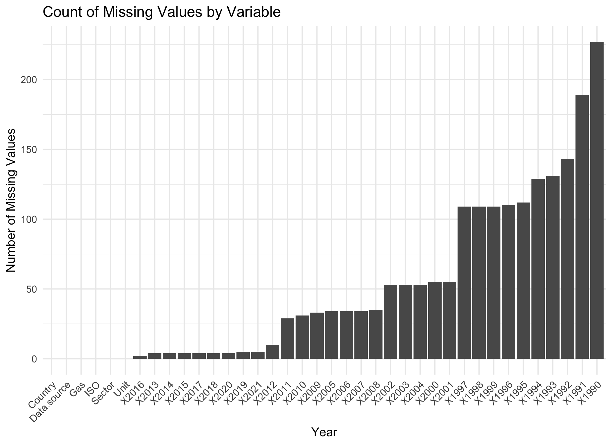
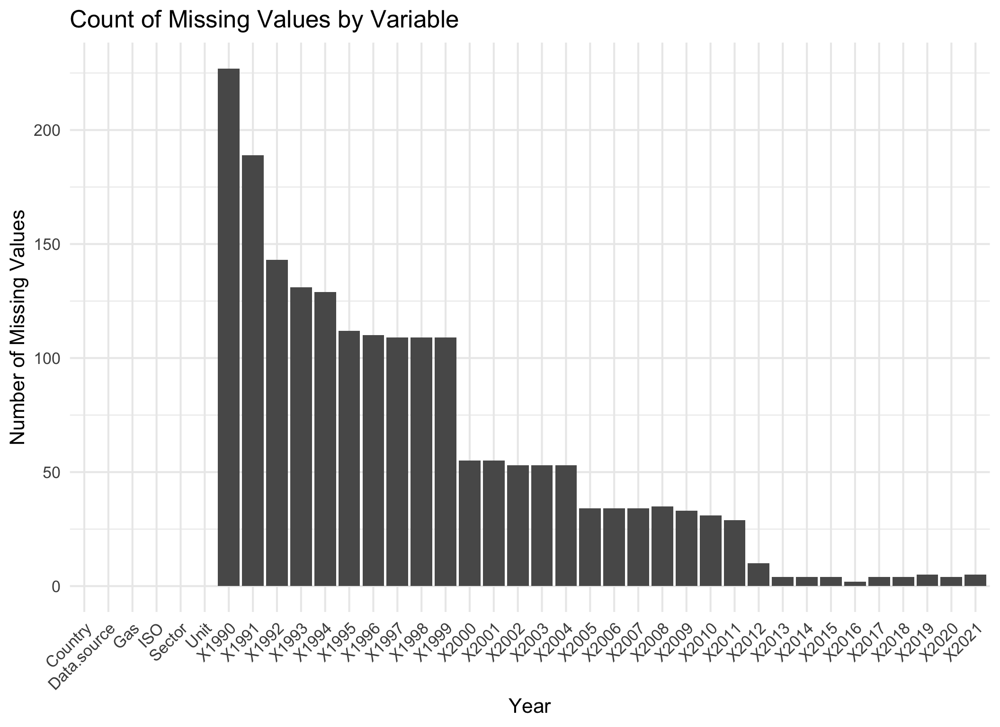
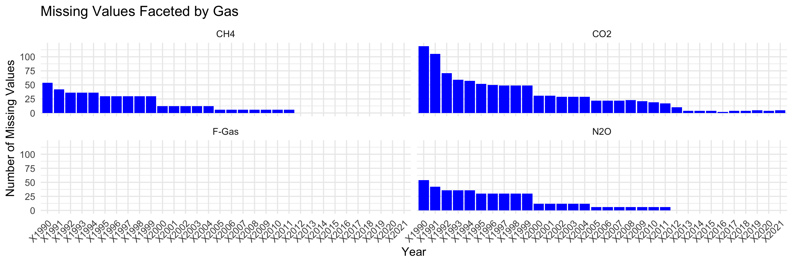

This project uses only one dataset that was collected ‘https://www.climatewatchdata.org/’ by Krishen Jagani and Rui Wang.
2.1 Description
The dataset was imported in a csv format. The dataset tracks emission of greenhouse gases across different sectors and gases over time, allowing for a detailed analysis of historical trends. The dataset has the following categorical variales and contionous variables:
Categorical Variables: Country (ISO, Country), data source, sector, gas type, and unit.
Issues: Missing values for earlier years and specific sectors. Moroever, the data is aggregated at varying levels (like global, country, sector, gases) which may filtering for specific analysis.
2.2 Missing value analysis
Code
emissions_data <-read.csv("Datasets/historical_emissions.csv", na ="N/A") # changed to relative path, which allow both of us(or others to load the data in the dataset folder)head(emissions_data)
── Conflicts ────────────────────────────────────────── tidyverse_conflicts() ──
✖ dplyr::filter() masks stats::filter()
✖ dplyr::lag() masks stats::lag()
ℹ Use the conflicted package (<http://conflicted.r-lib.org/>) to force all conflicts to become errors
Code
# missing values per columnmissing_value_counts <-colSums(is.na(emissions_data))missing_df <-data.frame(Variable =names(missing_value_counts), Missing = missing_value_counts)# Bar plot ggplot(missing_df, aes(x =reorder(Variable, Missing), y = Missing)) +geom_bar(stat ="identity") +labs(title ="Count of Missing Values by Variable",x ="Year",y ="Number of Missing Values" ) +theme_minimal(base_size =16) +theme(axis.text.x =element_text(angle =45, hjust =1))

Code
# missing values per columnmissing_value_counts <-colSums(is.na(emissions_data))missing_df <-data.frame(Variable =names(missing_value_counts), Missing = missing_value_counts)# Bar plot ggplot(missing_df, aes(x = Variable, y = Missing)) +geom_bar(stat ="identity") +labs(title ="Count of Missing Values by Variable",x ="Year",y ="Number of Missing Values" ) +theme_minimal(base_size =16) +theme(axis.text.x =element_text(angle =45, hjust =1))

<<<<<<< HEAD
Code
# I am wondering should we order the column in time? I think it might be better to find a pattern or something. Also, should we exclude the columns with no missing value?
=======
>>>>>>> upstream/main
3 Key observations from this plot:
Variables representing earlier years have higher number of missing values. This could indicate data collection during those times were less consistent or non existent. However, the proportion of missing values is very less. As we can see that year 1990 has the highest amount of missing values(around 250). However, the dataset has 8214 rows, which makes the proportion of missing values small.
Another trend that we observe, is the decrease in number of missing values with time as recent years have less number of missing values. This might suggest improvements in data reporting and collection over the years.
The key variables - Country, Gas, Sector and Unit have no missing values.
Code
<<<<<<< HEAD
# Calculate missing values for each gas missing_by_gas <- emissions_data |>pivot_longer(cols =starts_with("X"), names_to ="Year", values_to ="Value") |>group_by(Gas, Year) |>summarise(Missing_Count =sum(is.na(Value)), .groups ="drop")# Facets for gasesggplot(missing_by_gas, aes(x = Year, y = Missing_Count)) +geom_col(fill ="blue") +facet_wrap(~ Gas) +labs(title ="Missing Values Faceted by Gas",x ="Year",y ="Number of Missing Values" ) +theme_minimal(base_size =16) +theme(axis.text.x =element_text(angle =45, hjust =1))
=======
# Calculate missing values for each gas missing_by_gas <- emissions_data |>pivot_longer(cols =starts_with("X"), names_to ="Year", values_to ="Value") |>group_by(Gas, Year) |>summarise(Missing_Count =sum(is.na(Value)), .groups ="drop")# Facets for gasesggplot(missing_by_gas, aes(x = Year, y = Missing_Count)) +geom_col(fill ="blue") +facet_wrap(~ Gas) +labs(title ="Missing Values Faceted by Gas",x ="Year",y ="Number of Missing Values" ) +theme_minimal(base_size =16) +theme(axis.text.x =element_text(angle =45, hjust =1))
>>>>>>> upstream/main

4 Key Observations from this plot
Carbon Dioxide (CO2) has the most amount of missing values in year columns. Methane (CH4) and Nitrous Oxide (N2O) have relatively same number of missing values over the years. Whereas, F-Gas has no missing values.